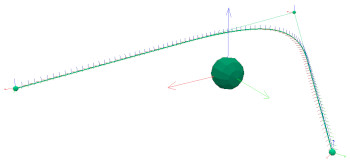

|
Paths/trajectoriesA path or trajectory is basically just data or a data structure appropriately generated or interpreted. The type of underlying data can be very varied and can represent 1D, 2D or 3D positions, but also orientations, poses, robot configurations/states, etc. For that reason it really depends on the user how that data structure is implemented in code. CoppeliaSim offers the Path class, meant to create, interpret, visualize and manipulate basic path/trajectory data. There is however one particular type of path data that is often used and that can also be represented in 3D space: poses, i.e. positions and orientations. CoppeliaSim offers a path object for this type of data, that can be modified by moving/duplicating/erasing its control points acting as support of the underlying curve:  [Simple path object, composed of 100 pose data points] Refer also to scene:createObject. |